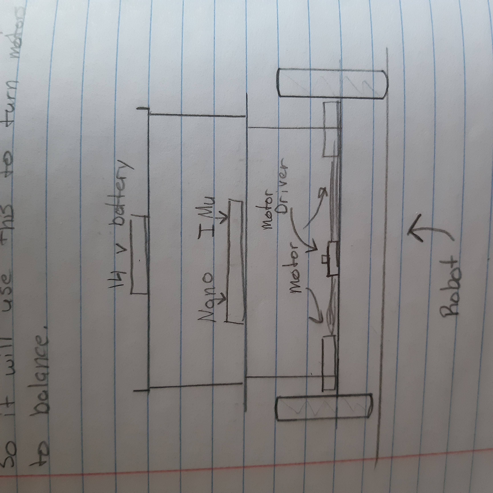
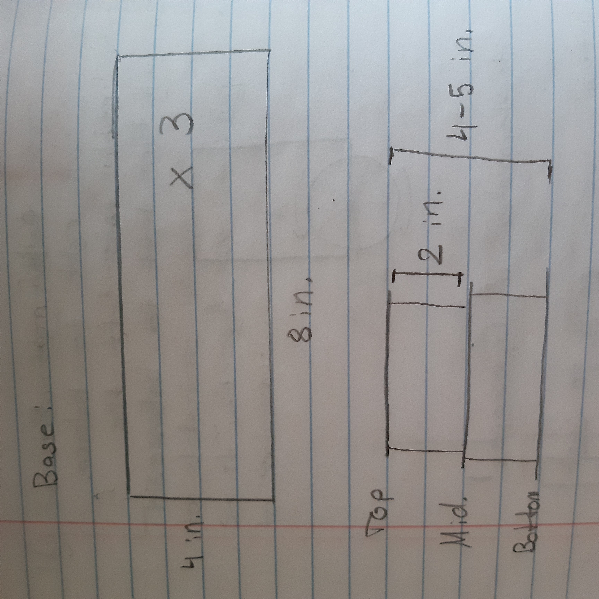

Self-Balancing Arduino Robot
I have been wanting to make this project for some time now. I have seen others do them with really expensive motors and devices and I wanted to test and see if I could build a functioning prototype with the $5 materials I had laying around my room.
I first, looked at other’s robots and how they designed their’s. I also looked at which devices I had. Now for the main controller, I just used a 5v Arduino Nano board. But the IMu sensor was the challenging part. I first thought I could use a complimentary filter with the MPU6050, but that prooved to cause some oscillations and false orientation data. The cheap accelerometers would read too much vibrations and the gyros drift would sustain it well for long self-balancing. EVEN with the complimentary filter. Look, the comlimentary filter is great. But I wanted to remove as many failure points as possible for the first version. So for the first prototype, I decided to go the easy route: getting quaternions from the BNO055 and converting those to Eular angles.
For the motors I had only geared DC motors. These are super cheap and shouldn’t be used on robots like this! I wonder if this will cause me any pain in the future?
And to drive those motors I had a L298N motor driver. This for sure will cause me problems and I knew it. I was just too broke to buy a better solution. This driver draws a lot of current. In fact, there is a voltage drop, from the input battery terminal to the motor driving terminals, by more than 2 volts. This means, that if I were to hook up a 9v battery, the motors would only see about 7 volts. And I am not even talking about the loss in current!!
So, this driver is inefficient. Oh well!
For the main power source, I needed a battery that could provide a lot of power. However, I didn’t have a rechargable battery. I tried 9v batteris, 2 9v batteries. and even some cheap NiCds. But I eventually found that the best results are with 3 9v batteries in series. Producing a total of 27 volts. Now I don’t exactly know what this did the the 6v rated motors, but it was enough to provide the current needed for the robot. But only for a short amount of time, like 5-10 tests and then it was done.
For the main frame, I went to CAD… NOOO. I was broke back then and didn’t have a 3D printer. So I built the frame from cardboard cut with my 5 dollar scissors and barbecue skewers. I wanted a 2 ‘story’ build where the battery and IMU would go on the top. Ideally the most mass should go on the top, since this is essentially an inverted pendulum. And the more mass an object has, the more inertia it has. So, the robot would have more time to react and stabilize it’s own weight, if most of the weight was on top.
In the end, I sketch-up something like this:

and the dimensions:

In order to control the robot, it needs to know it’s orientation, more specifically it’s tilt. So, we can use a sensor called an Inertial Measurment Unit (IMU for short). 6-axis IMUs have a 3 axis accelerometer and a 3 axis gyroscope. We can use these and some math to get our rotation in Eular angles. However, this is usually sensative to vibration and gimble lock. So instead we can use something called Quaternions. Quaternions are the numbers that extend the complex numbers and can define 3 dimensional rotations with 4 numbers. However, most IMU’s don’t have quaternions. So, I used the BNO055 IMU and I explain how to get these measurments in this blog post. Please go check that out and come back here when you feel ready.
Once the Eular angles are achieved, we need a way to control this. After some research, I chose the PID controller to control my robot. I learned how to implement this in Paul McWhorter’s IMU class.
Here is how I implemented a PID controller:
First, you need to get your error. Like let’s say an angle of 0 is the target, but we read 10 degrees. Then the error is 10 degrees. Here is the code for getting all the terms in PID, which I will explain later:
rollErrorOld = rollError; //get the old rollError
rollError = rollTarget-rollActual; //get the current rollError
rollErrorChange = rollError-rollErrorOld; //get the change in the rollError; our newError minus the oldError = change in Error
rollErrorSlope = rollErrorChange/dt; //get the slope of our error; the change in error over the chaneg in time is the 'slope' of the error 'line' if the y-axis is error and the x-axis is time
rollErrorArea = rollErrorArea+rollError*dt; //the area under the curve between the error curve and the x-axis
And all of these should be the same for pitch, just the variable names change.
But what is PID?
Well, I explained that in this blog post. You should go check it out, and come back here when you feel confident on PID controllers.
Now that we know what a PID controller is and how it works, let’s see how this will help control our robot. The algorithm calculates our current error in degrees and the PID contoller outputs a number accordingly to the input. And we need to use that output value to control our motors. Since our input is in degrees, our output will also be in degrees. But the cheap DC motors don’t accept values in “degrees”. You can only apply a voltage or a PWM signal to the motors.
So a decent engineer would create a function that maps degrees to the motor’s rotation and speed, and use that function to control the motors. However, 13 year old me was too lazy and directly multiplied the degrees by a combonation of numbers to directly control the motors.
This was probably a major reason to as why the robot didn’t succeed.
Instead what I did was use the output by the controller and scale them for PWM and use that to control the motors. Also, I would change the direction of the spin according to the sign of the PID output. And I hoped that this would be enough to achieve maybe a few seconds of self-stabilization. And I was close, I got the robot to stand upright, balancing, for a few seconds, then it would fall. This was partly due to the usb cable being attached to the robot because I didn’t have a good way to power the Arduino and the motor driver.
If you want to watch a short video of it in action:
Another reason to as why it didn’t work is due to the poor structure of the robot. If you make a robot out of cardboard and hot glue it together with barbaque skewers, you’re going to get something very inperfect. And when the robot is trying to balance, it will cause oscillations. These oscillations in some cases can be dampened with the PID controller, but in this case, it was a gonner.
After I accomplished a few seconds of balancing after days of hard work, I felt like I should call this a success and blame the failures on the poor quality of equipment.
Subscribe to Burak Ayyorgun
Get the latest posts delivered right to your inbox